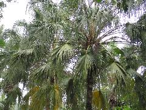

蒲葵
學名：Livistona chinensis R.Br.
科名：棕櫚科
別名：蒲扇、葵扇木、古波
原產地：臺灣龜山島、中國南部、日本、琉球
特徵：
為常綠喬木，單幹直立不分枝，高達15至20公尺，直徑長30公分，灰褐色，環紋不規則且粗糙，葉為大扇形，頂生，掌狀分裂，中裂，裂片再作2淺裂並向下懸垂，綠色，葉柄粗大，花小形為兩性花，黃綠色，肉穗花序，果實為核果，為橢圓形，早期為綠色，熟時變為黑褐色，內有種子1粒，球形。
用途：
樹形優美，常被種植為行道樹、庭園樹；其木材可作傘柄、屋柱、手杖；葉子可作扇子、帽子及刷子；葉子基部的葉鞘因具有纖維，可用以製作繩索等物。